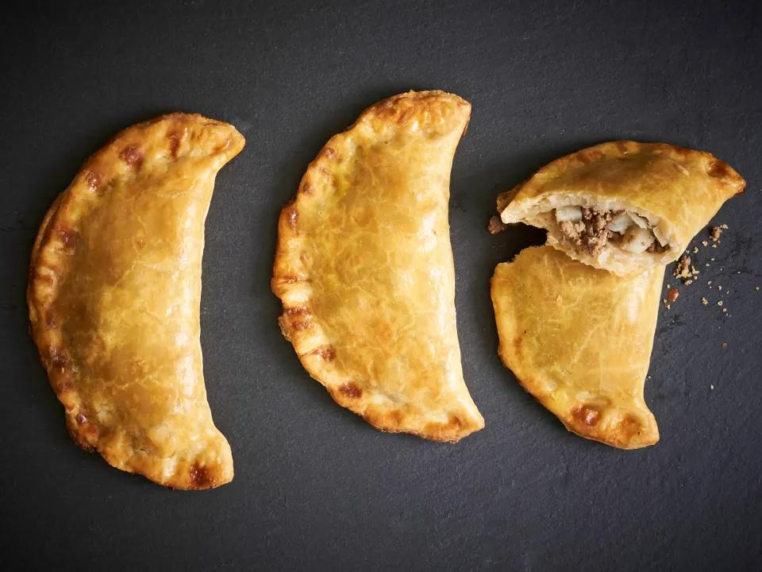

Upper Michigan Pasties

A hearty, savory pastry from the Upper Michigan region of the US!
Ingredients:
Crust:
- 1/2 lb Lard
- 1 cup boiling water
- 4 cups all purpose flour
- tablespoon salt
Filling:
- 8 potatoes, peeled and cubed
- 1 large rutabaga, peeled and cubed
- 1 lb ground sirloin
- 3 sweet onions, peeled and chopped
- 2 tablespoons salt
- 1 tablespoon black pepper
Instructions:
Crust:
- Pour the boiling water over the lard until the lard is dissolved.
- Add salt to flour; add this to the water and lard.
- Mix this together until it forms a ball.
- Wrap in Saran Wrap and refrigerate overnight.
Filling:
- Combine the filling ingredients in a large bowl. Let sit and meld together, while rolling out the crust. This chilled dough will make 8 pasties.
- Take one of the dough balls and roll out on a floured surface, roll into a circle about 1/8 inch thick. Do the same with all the dough.
- Put large cupful of filling on the crust; dab ice water around the edge of the crust to seal.
- Add a teaspoon of butter on top of the filling before sealing.
- Fold crust over top of filling like a turnover, and seal edges well.
- Place pasties on baking sheets and bake at 425°F for 15 minutes; then turn oven down to 350°F for 60 mimutes, or until nicely browned.
- When done, brush the top with butter.
- Enjoy!